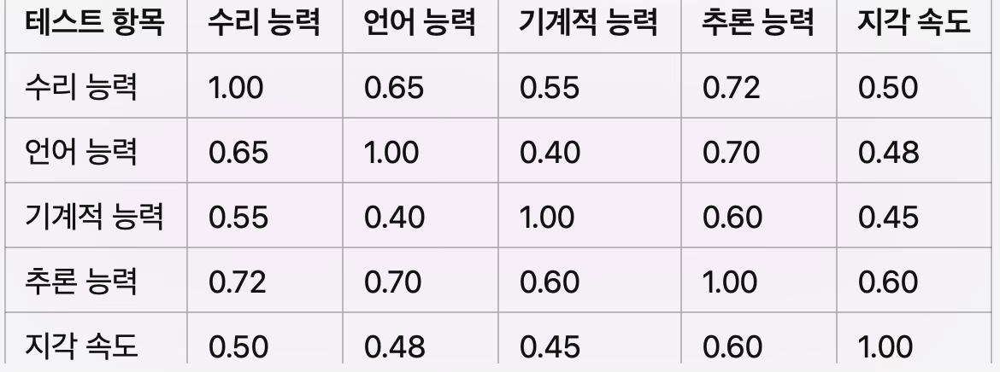
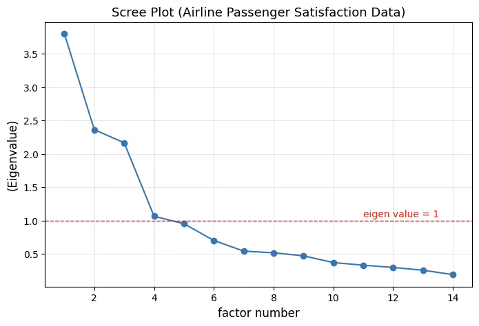
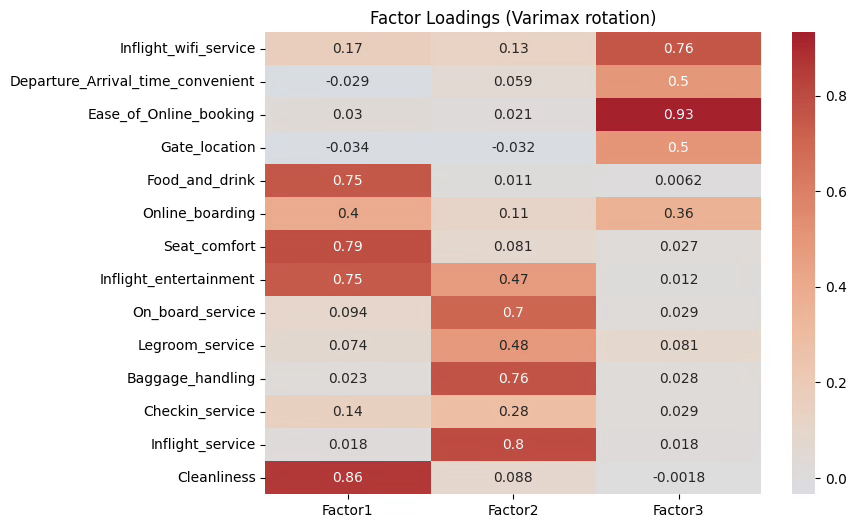
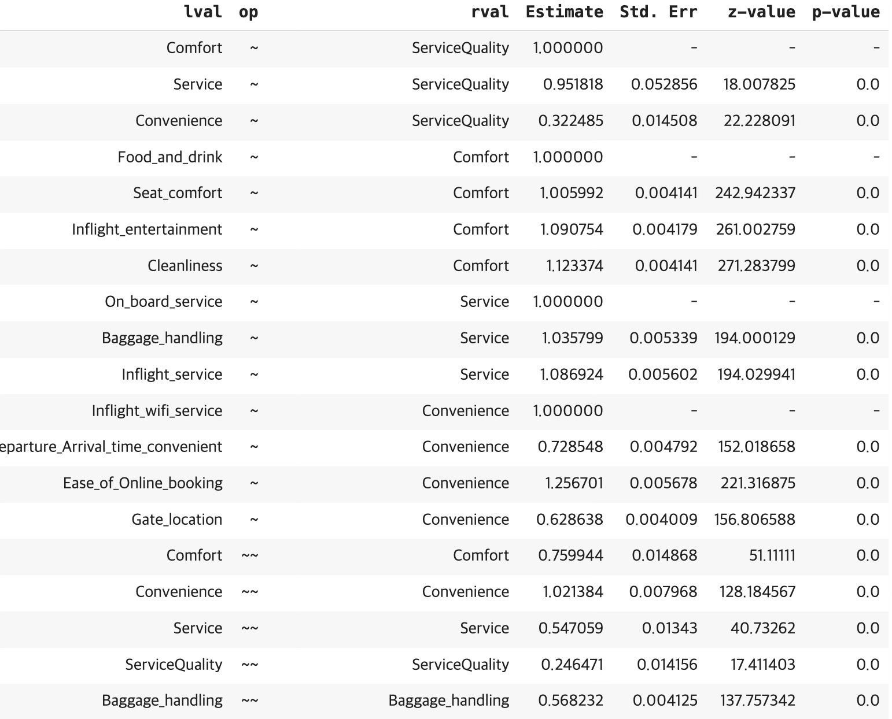

다변량분석 3. 요인분석
Chapter 1. 요인분석 개념
요인분석은 인간의 지능이 단일한 능력인지, 혹은 여러 하위 능력으로 구성되어 있는지를 탐구하려는 심리학적 연구에서 출발한 분석 방법이다.
초기의 심리학자들은 지능검사 점수들 사이에 일정한 상관이 존재한다는 사실에 주목하였다. 예를 들어 수리능력, 언어능력, 공간능력 등 서로 다른 과목의 점수가 비슷하게 높거나 낮게 나타나는 현상은, 이들 능력의 배후에 공통된 요인이 존재함을 암시한다.
이러한 가정 아래, 요인분석(factor analysis)은 여러 관측변수들 간의 상관구조를 분석하여 그 배후에 숨겨진 잠재적 요인(latent factors)을 찾아내는 통계적 방법이다.
즉, 관측된 데이터가 몇 개의 기본적인 차원이나 요인으로 설명될 수 있다는 전제를 두고, 그 요인들이 서로 어떤 의미를 가지는지를 탐색한다.
결국 요인분석은 인간의 지능뿐 아니라 태도, 성격, 소비행동, 사회적 가치 등 다양한 복합적 현상 속에서 ’표면의 다양성 뒤에 숨어 있는 공통 구조’를 밝히는 도구라 할 수 있다.
1. 역사
(1) Charles Spearman, 1904: 일반 지능 요인(G 요인) 이론
찰스 스피어만(Charles Spearman, 1904)은 요인분석의 출발점을 마련한 인물이다.
그는 여러 지능 검사 점수들 사이에 높은 상관관계가 존재한다는 사실을 발견하고, 이러한 공통된 변동성이 하나의 근본적인 능력, 즉 일반 지능 요인(g 요인)에 의해 설명될 수 있다고 주장하였다
스피어만은 인간의 지능이 단일한 능력으로만 구성되어 있지 않으며, 각 과목이나 과제에는 그 과제 특유의 능력도 함께 작용한다고 보았다. 이에 따라 그는 2요인 이론(two-factor theory)을 제안하였다.
즉, 각 개인의 관측된 성적(또는 변수 값)은 모든 검사에 공통적으로 작용하는 일반 요인(g)과, 각 검사에 고유하게 작용하는 특수 요인(s)의 결합으로 설명된다고 하였다.
이 이론은 심리학에서 ’지능의 구조’를 설명하는 최초의 통계적 접근으로, 데이터에 내재된 공통 구조(common structure)를 수학적으로 찾아내려는 시도의 출발점이 되었다.
결국 스피어만의 연구는 단순한 지능 연구를 넘어, 복잡한 현상을 몇 개의 잠재 요인으로 요약하여 해석할 수 있다는 통계적 사고의 기반을 마련한 셈이다.
(2) Louis Thurstone, 1930s: - 다중 요인 이론
루이스 서스톤(Louis Thurstone, 1930s)은 스피어만의 단일 g 요인 이론에 도전하며, 다중 요인 이론(Multiple Factor Theory)을 제안한 인물이다. 그는 인간의 지능이 하나의 일반 요인으로만 설명될 수 없으며, 여러 개의 독립적인 능력으로 구성되어 있다고 주장하였다.
서스톤은 다양한 지능 검사를 실시한 뒤, 그 점수들 사이의 상관구조를 분석하여 몇 가지 기본적인 능력 요인을 추출하였다. 그는 이 과정을 통해 언어 능력, 공간적 시각화, 수리 능력, 추론 능력, 기억력) 등 서로 구별되는 기본 정신 능력이 존재함을 제시하였다.
그의 접근은 단일 요인을 중심으로 한 스피어만의 시각과 달리, 여러 요인이 동시에 작용하여 인간의 복잡한 지적 행동을 설명할 수 있다는 점을 강조하였다.
또한 서스톤은 이러한 다요인적 구조를 검증하기 위해 탐색적 요인분석(Exploratory Factor Analysis, EFA)의 기초적인 절차를 체계화하였다. 그 결과, 요인분석은 심리학을 넘어 교육, 사회과학, 경영, 마케팅 등 다양한 분야에서 데이터 속 잠재 구조를 탐색하는 통계적 도구로 발전하게 되었다.
(3) 확증적 요인분석(CFA)의 발전 - 1960년대 이후
1960년대 이후에는 요인분석이 탐색적 접근에서 한 단계 더 발전하여, 확증적 요인분석(Confirmatory Factor Analysis, CFA)이라는 새로운 패러다임이 등장하였다.
CFA는 단순히 데이터 속에서 요인을 찾아내는 것이 아니라, 이론적으로 설정된 요인 구조가 실제 자료에 부합하는지를 검증하는 절차이다.
즉, 연구자가 사전에 요인 수, 각 변수와 요인의 관계, 요인 간 상관 구조 등을 명시적으로 가정하고, 그 가정이 데이터에 의해 지지되는지를 통계적으로 검토한다.
이러한 접근은 기존의 탐색적 요인분석(EFA)이 ”데이터로부터 구조를 찾아내는 방법”이었다면, 확증적 요인분석은 ”이론이 데이터에 적합한지를 검증하는 방법”이라는 점에서 본질적인 차이를 가진다.
CFA의 발전은 심리학, 교육학, 사회학, 마케팅 연구 등 다양한 분야에서 측정모형(measurement model) 검증을 가능하게 하였고, 더 나아가 구조방정식모형(Structural Equation Modeling, SEM)의 핵심 구성 요소로 자리잡게 되었다.
결국 CFA는 ”요인의 존재를 밝히는 기술”에서 ”이론을 경험적으로 검증하는 과학적 절차”로 요인분석을 진화시킨 전환점이라 할 수 있다.
(4) 구조방정식 모형(SEM)과의 통합
1980년대 이후 요인분석은 구조방정식 모형(Structural Equation Modeling, SEM)으로 확장·통합되면서 한층 정교한 분석 체계를 갖추게 되었다.
SEM은 요인분석의 측정모형과 회귀분석의 구조모형을 결합하여, 잠재 변수와 관측 변수 간의 관계를 동시에 추정할 수 있는 통합적 통계 방법이다.
이 접근을 통해 연구자는 단순히 ”요인이 존재하는가?“를 넘어서, ”요인들이 서로 어떤 인과적 관계를 맺고 있는가?”까지 검증할 수 있게 되었다. 즉, SEM은 측정의 타당성과 이론적 구조의 인과적 경로를 동시에 분석하는 틀을 제공한다.
이 방법은 심리학, 교육학, 사회학, 경영학, 마케팅 등 인간 행동과 인식의 복합적 구조를 다루는 사회과학 분야에서 폭넓게 활용되고 있다. 결국 구조방정식 모형의 등장은 요인분석을 단순한 탐색 도구에서 이론 검증을 위한 과학적 모델링 체계로 발전시키는 결정적 전환점이 되었다.
2. 스피어만 연구결과
(1) 스피어만의 2요인 이론(two factor theory)
스피어만의 2요인 이론은 인간의 지적 수행을 설명하는 최초의 체계적 요인모형으로, 모든 인지적 과제가 공통 요인과 특수 요인에 의해 결정된다고 보는 접근이다.
일반 요인(g 요인)
스피어만은 g 요인을 모든 인지적 활동에 공통적으로 작용하는 일반 지능으로 정의하였다. 이는 문제 해결, 논리적 추론, 정보 처리 등 다양한 과제 수행의 기반이 되는 보편적 정신 능력이다.
서로 다른 형태의 지능 검사―예를 들어 언어, 수리, 공간 과제―에서 상관이 관찰되는 이유는, 이 모든 과제들이 일정 부분 동일한 일반 지능(g)의 영향을 받기 때문이라 보았다.
특수 요인(s 요인)
그러나 스피어만은 모든 지적 활동이 완전히 동일한 능력에 의해 설명된다고는 보지 않았다. 각 과제에는 그 과제만의 특수한 능력, 즉 특수 요인(s)이 존재하며, 이는 특정 영역에만 작용한다.
예를 들어 수학 문제 해결에는 일반 지능(g)이 기여하지만, 동시에 수학적 사고나 계산 능력과 같은 수학 고유의 s 요인이 별도로 작용한다.
이와 같이 스피어만의 2요인 이론은 모든 인지적 수행이 공통된 일반 능력(g)과 과제 특유의 특수 능력(s)의 결합으로 이루어진다고 설명하였다. 이 모델은 이후의 요인분석과 다중지능 이론 발전의 기초가 되었으며, 인간 지능의 구조를 이해하는 데 중요한 이정표가 되었다.
(2) 상관계수 행렬과 부하값

부하값 0.80 0.75 0.65 0.85 0.60
(3) 결과 해석
요인부하값(factor loading)은 각 변수가 요인과 얼마나 강하게 관련되어 있는지를 나타내는 지표로, 값이 높을수록 해당 변수가 그 요인의 특성을 잘 반영한다는 뜻이다.
수리 능력의 g 요인 부하값이 0.80이라면, 수리 능력 점수의 분산 중 약 80%가 일반 지능 요인(g)에 의해 설명된다는 의미이다. 즉, 수리 능력 검사는 개인의 전반적인 지적 능력 수준을 비교적 잘 반영하는 과제라 할 수 있다.
추론 능력이 g 요인에 대해 0.85로 가장 높은 부하값을 가진다면, 이는 추론 과제가 일반 지능을 가장 직접적으로 측정하고 있음을 의미한다. 다시 말해, 논리적 사고나 문제 해결 능력은 g 요인과의 관련성이 특히 강한 인지 영역이다.
반면, 지각 속도의 부하값이 0.60이라면 g 요인과의 연관성이 상대적으로 낮음을 뜻한다. 이는 지각 속도 과제의 수행이 일반 지능보다는 과제 특유의 처리 속도, 주의 집중, 시각적 변별 능력 등과 같은 특수 요인(s 요인)의 영향을 더 많이 받기 때문으로 해석된다.
따라서 요인부하값을 통해 각 인지 능력이 얼마나 공통 요인(g)에 의해 설명되는지, 그리고 어느 정도가 특수 요인(s)에 기인하는지를 정량적으로 파악할 수 있다.
이러한 해석은 요인분석이 단순한 상관관계 탐색을 넘어, 인간의 인지 구조를 이해하는 데 기여하는 핵심적인 근거가 된다.
3. 주요 용어
공통요인(Common Factors)은 여러 관측변수가 함께 공유하는 잠재적 원인으로, 변수들 간의 상관관계를 설명하는 근본적 구조이다. 즉, 각 변수의 총 변동성 가운데 여러 변수에 공통적으로 작용하는 부분을 의미하며, 인간의 지능, 태도, 성격 등 복합적 특성의 공통된 차원을 찾아내는 데 활용된다.
특수요인(Specific Factors)은 각 변수에 고유하게 작용하는 요인으로, 다른 변수들과는 공유되지 않는다. 이는 각 변수가 가지는 독립적인 특성이나 측정상의 특수한 영향을 반영하며, 공통요인으로 설명되지 않는 잔여 변동성을 나타낸다.
요인 부하(Factor Loadings)는 각 요인이 관측변수에 미치는 영향의 크기이자, 변수와 요인 간의 상관계수로 해석된다. 요인 부하값이 높을수록 해당 변수가 그 요인의 특성을 잘 반영하며, 값이 낮을수록 요인과의 관련성이 약함을 의미한다. 따라서 요인 부하는 각 변수의 의미를 해석하고 요인의 성격을 규정하는 핵심 단서가 된다.
요인 회전은 추출된 요인들의 해석을 단순하고 명확하게 하기 위한 절차이다. 초기 요인 추출 후의 결과는 해석이 모호할 수 있으므로, 요인축을 회전시켜 변수들이 특정 요인에 더 뚜렷하게 부하되도록 만든다. 회전 방식에는 요인 간 상관을 허용하지 않는 직교 회전(Varimax)과, 요인들 간의 상관을 허용하는 사교 회전(Oblimin) 등이 있으며, 이를 통해 연구자는 각 요인의 의미를 보다 명확하게 해석할 수 있다.
4. 요인분석 종류
탐색적 요인분석(Exploratory Factor Analysis, EFA)은 데이터에 내재된 요인 구조를 사전 가정 없이 탐색하는 통계적 방법이다. 연구자가 요인의 수나 변수와 요인 간의 관계에 대해 미리 알지 못하는 상태에서, 관측된 변수들 간의 상관관계를 분석하여 잠재 요인(latent factors)을 찾아내는 데 목적이 있다.
즉, 데이터로부터 요인의 개수와 구조를 ’발견’하는 과정이라 할 수 있다. EFA는 새로운 개념이나 척도를 개발할 때, 또는 복잡한 현상의 기저 구조를 파악하고자 할 때 주로 사용된다.
확증적 요인분석(Confirmatory Factor Analysis, CFA)은 이와 달리, 연구자가 이론적으로 설정한 요인 구조가 실제 데이터에 부합하는지를 검정하는 절차이다. EFA가 요인을 찾아내는 과정이라면, CFA는 이미 설정된 모형이 데이터를 잘 설명하는지 확인하는 과정이다. 따라서 CFA에서는 요인 수, 변수와 요인의 연결 관계, 요인 간 상관 구조 등을 사전에 명시해야 하며, 모형의 적합도 지수(fit indices)를 통해 이론적 모형의 타당성을 평가한다.
탐색적 요인분석과 확증적 요인분석은 모두 여러 관측변수에 내재된 잠재 요인을 밝히려는 동일한 목표를 가지고 있지만, 접근 방식과 사용 목적에서 본질적인 차이를 가진다.
EFA는 말 그대로 탐색적 성격을 갖는다. 연구자가 요인의 개수나 변수와 요인의 관계에 대해 명확한 사전 가정을 두지 않은 상태에서, 데이터 자체에 내재된 상관구조를 분석하여 잠재 요인의 수와 구성을 찾아내는 데 목적이 있다.
즉, 데이터로부터 자연스럽게 드러나는 패턴을 통해 ”어떤 요인이 존재하는가”를 발견하는 과정이다. 이 과정에서 요인의 개수 결정, 요인 회전(rotation), 요인 부하 해석 등은 연구자의 판단과 통계적 기준(예: 고유값, 스크리 플롯, 누적 설명력)에 의존한다. 따라서 EFA는 이론의 발견을 위한 초기 단계의 분석이라 할 수 있다.
반면, CFA는 확증적 성격을 지닌다. EFA로 탐색된 요인 구조나 기존 이론에 기반하여, 연구자가 미리 설정한 요인 모형이 실제 데이터에 적합한지를 검증한다. 즉, ”이 변수들은 특정 요인에 속한다”, ”이 요인들은 서로 어떤 관계를 가진다”라는 가정이 이미 존재하며, CFA는 그 가정이 데이터에 의해 얼마나 지지되는가를 평가하는 절차이다.
이를 위해 요인 부하의 경로를 사전에 명시하고, 변수 간의 상관 구조를 제약하며, 모형 적합도 지수(예: CFI, TLI, RMSEA, SRMR 등)를 통해 전체 모형의 타당성을 판단한다. CFA는 단순히 요인을 찾는 데 그치지 않고, 이론적 모형의 검증과 측정의 타당성 평가에 초점을 둔다.
요약하자면, EFA는 ”데이터가 어떤 구조를 갖고 있는가?“를 묻는 과정이고, CFA는 ”가정한 구조가 데이터에 부합하는가?”를 검증하는 과정이다. 이 두 방법은 상호보완적인 관계를 이루며, 일반적으로 연구는 EFA를 통해 요인 구조의 윤곽을 파악한 후, CFA를 이용하여 그 구조가 이론적으로나 경험적으로 타당한지를 검증하는 순서로 진행된다.
이러한 연속적 접근은 단순히 변수들 간의 상관을 기술하는 수준을 넘어, 데이터 속 잠재적 개념을 수학적으로 모델링하고, 이론적 타당성을 검증하는 구조방정식 모형(SEM)의 기초로 이어지게 된다. 따라서 EFA와 CFA는 요인분석의 두 축이자,”탐색에서 검증으로” 이어지는 사회과학 연구의 논리적 흐름을 완성하는 핵심적인 분석 틀이라 할 수 있다.
Chapter 2. 탐색적 요인분석
1. 탐색적 요인분석 절차
탐색적 요인분석은 관찰된 여러 변수들 간의 상관관계를 분석하여, 그 배후에 존재하는 잠재 요인(latent factors)을 찾아내는 통계적 절차이다. 즉, 다수의 변수들이 실제로는 몇 개의 공통된 차원 또는 개념에 의해 설명될 수 있다는 가정에서 출발한다.
탐색적 요인분석의 기본 목적은 데이터 속에서 변수 간의 상관구조를 탐색하고, 그 구조를 가장 잘 요약하는 잠재 요인을 식별하는 것이다. 이 과정을 통해 변수들이 어떤 요인에 의해 함께 움직이는지를 파악할 수 있으며, 복잡한 데이터의 차원을 축소하고 의미 있는 해석 단위를 만들어 낼 수 있다.
예를 들어, 한 개인의 학업 능력을 측정하는 여러 과목 점수(수학, 과학, 언어, 사회 등)가 서로 높은 상관을 보인다면, 이들 과목은 ”학업 성취도”라는 공통 요인에 의해 설명될 수 있다. 탐색적 요인분석은 바로 이러한 공통 구조를 찾아내어 변수들을 체계적으로 묶는 방법이다.
따라서 EFA는 이론이 명확히 정립되지 않았거나, 새로운 영역의 데이터를 다룰 때 특히 유용하다. 데이터로부터 요인 수를 추정하고, 각 변수들이 어떤 요인에 강하게 연관되어 있는지를 밝힘으로써 연구자는 변수의 집단적 의미를 탐색하고, 후속 이론 구축의 기초 자료를 얻을 수 있다.
결국 탐색적 요인분석은 복잡한 현상 속에서 데이터의 숨은 질서를 발견하는 과정이며, 이를 통해 연구자는 변수 간의 관계를 단순화하고, 데이터에 내재된 패턴을 이론적으로 해석할 수 있게 된다.
(1) 데이터 수집
요인분석을 수행할 때는 충분한 표본 크기를 확보하는 것이 중요하다. 일반적으로 변수 한 개당 최소 10개 이상의 표본이 권장되며, 표본 수가 많을수록 분석 결과의 안정성과 신뢰도가 높아진다.
요인분석에 포함되는 변수들은 동일한 개념 또는 구성개념을 측정해야 한다. 따라서 구조화된 설문조사에서 하나의 개념을 여러 하위 문항으로 측정한 리커트 척도 자료가 요인분석에 가장 적합하다. 예를 들어, ”고객 서비스”에 관한 설문 문항들—응답 속도, 직원의 친절도, 문제 해결 능력 등—은 공통적으로 서비스 품질이라는 잠재 요인을 반영할 수 있다.
(2) 요인분석 모형
p개의 확률변수 데이터 \({\underset{¯}{x}}' = (x_{1},x_{2},...,x_{p})\)의 평균 벡터 \(\underset{¯}{\mu}\), 공분산행렬을 \(\Sigma\)라 하면, \({\underset{¯}{x}}_{p} = L_{p \times m}{\underset{¯}{f}}_{m} + {\underset{¯}{\eta}}_{p}\)이다.
\(f_{1},f_{2},...,f_{m}\): 공통 common 요인, \(\underset{¯}{f} \sim (\underset{¯}{0},I)\) 공통 요인들의 평균은 0이고 분산은 1이며, 공통 요인간 상관 관계는 없다.
\(L_{p \times m}\): 부하행렬(loading matrix)로, 각 관측변수가 요인에 의해 얼마나 영향을 받는지를 나타내는 계수를 포함한다. 즉, \(L_{ij}\)는 i-번째 변수와 j-번째 요인 간의 관계 강도를 의미한다.
\(\eta_{1},\eta_{2},...,\eta_{p}\): 특수 specific 요인, \(\underset{¯}{\eta} \sim (\underset{¯}{0},\Psi)\) 특수 요인(specific factors)으로, 각 변수에 고유하게 작용하는 변동 요인을 나타낸디.
\(\underset{¯}{f}\) 와 \(\underset{¯}{\eta}\)는 서로 독립이다.
(3) 전제 조건 확인
요인분석을 실시하기 전에, 변수들 간의 상관관계가 충분히 높아 공통 요인을 추출할 수 있는 구조인지 확인해야 한다. 즉, 변수들이 서로 일정한 관계망을 형성해야 요인분석이 의미 있는 결과를 낼 수 있다.
이를 위해 다음의 적합성 검정 절차를 수행한다.
1. KMO(Kaiser-Meyer-Olkin) 검정
KMO 지수는 변수들 간의 상관관계가 요인분석에 적합한지를 평가하는 지표이다. 값이 0과 1 사이에서 산출되며, 일반적으로 0.7 이상이면 요인분석에 적합하다고 본다. 0.8 이상이면 매우 양호한 수준으로 판단된다.
2. Bartlett의 구형성 검정(Bartlett’s Test of Sphericity)
이 검정은 변수들 간의 상관관계가 전반적으로 유의한지를 평가한다. 귀무가설은 ”상관행렬이 단위행렬과 같다”이며, 검정 결과가 통계적으로 유의(p < 0.05)할 경우 변수들 간 상관이 충분하므로 요인분석을 수행할 수 있다.
3. 상관행렬(Correlation Matrix) 분석
변수들 간의 상관행렬을 생성하여 상관 패턴을 검토한다. 특정 변수들이 다른 변수들과 전반적으로 높은 상관을 가진다면, 이 변수들은 공통된 잠재 요인을 공유하고 있을 가능성이 높다. 반대로 상관이 매우 낮거나 불규칙한 변수는 요인구조에 잘 부합하지 않을 수 있다.
(4) 요인 추출 방법 선택
1. 주축 요인법 (Principal Axis Factoring)
주축 요인법은 변수들의 상관행렬 \(R_{p \times p}\)로부터 고유값과 고유벡터를 구하여 요인을 추출하는 방법이다. 고유값을 \(\lambda_{1} \geq \lambda_{2} \geq \ldots \geq \lambda_{p}\), 고유벡터를 \((e_{1},e_{2},\ldots,e_{p})\)라 하면, 상관행렬은 다음과 같이 분해된다.
\[R_{p \times p} = \begin{bmatrix} \sqrt{\lambda_{1}}e_{1} & \sqrt{\lambda_{2}}e_{2} & \ldots & \sqrt{\lambda_{p}}e_{p} \end{bmatrix}\left\lbrack \begin{array}{r} \sqrt{\lambda_{1}}e_{1}' \\ \sqrt{\lambda_{2}}e_{2}' \\ \vdots \\ \sqrt{\lambda_{p}}e_{p}' \end{array} \right\rbrack = LL'\]
이때 L은 부하행렬로, 각 변수와 요인 간의 관계 강도를 나타낸다. 상관행렬로부터 부하행렬을 계산하고, 이를 이용하여 주성분 점수 \(y = Lx\)를 구한 뒤, 요인 점수는 다음과 같이 계산된다. \(f_{k} = \frac{y_{k}}{\sqrt{\lambda_{k}}}\)
2. Bartlett 방법
Bartlett 방법은 관측치 간의 상관이 없다는 가정하에 요인 점수를 추정하는 방식이다. 이 방법은 요인구조가 명확하고, 변수 간 독립성이 어느 정도 보장될 때 적합하다. 요인 점수를 추정할 때 오차를 최소화하는 가중치를 부여하여, 각 요인의 상대적 영향력을 추정한다.
3. 회귀법 (Thompson Method)
Thompson 방법은 요인 점수를 선형회귀 원리에 따라 추정하는 방식이다. 관측변수 x에 대하여, 다음과 같이 표준화된 벡터 \(z = (x - \mu)/\sigma\)를 정의한다.
이때 z와 f의 결합분포를 다음과 같이 놓는다.
\(\left\lbrack \begin{array}{r} z \\ f \end{array} \right\rbrack \sim N\left( \left\lbrack \begin{array}{r} 0 \\ 0 \end{array} \right\rbrack,\begin{bmatrix} P & L \\ L' & I \end{bmatrix} \right)\), 조건부 기댓값을 이용하면 요인 점수의 추정치는 다음과 같이 주어진다. \(E(f \mid z) = L'P^{- 1}z\) 또는 상관행렬 R을 이용하면, \(f_{r} = L'R^{- 1}z_{r}\) 로 표현된다. 이 방식은 요인과 관측변수 간의 선형 관계를 바탕으로 요인 점수를 회귀적으로 추정하므로, 계산이 간편하고 실제 응용에서 널리 사용된다.
요약하면, 주축 요인법은 상관행렬의 고유값 분해를 기반으로 요인을 추출하는 방법이며, Bartlett 방법과 회귀법은 각각의 가정 하에서 요인 점수를 산출하는 절차이다. 이들 방법의 선택은 연구 목적, 데이터 특성, 그리고 요인구조의 명확성에 따라 달라진다.
(5) 추출할 요인의 수 결정
요인분석에서 중요한 단계는 몇 개의 요인을 추출할 것인가를 결정하는 것이다. 요인의 수가 너무 적으면 데이터의 복잡한 구조를 충분히 설명하지 못하고, 너무 많으면 불필요한 요인이 포함되어 해석이 어렵게 된다. 따라서 적절한 요인 수를 선택하기 위해 여러 통계적 기준이 사용된다.
1. 고유값(Eigenvalue) 기준
요인분석에서는 상관행렬 R의 고유값을 이용하여 각 요인이 설명하는 분산의 크기를 평가한다. 고유값이 1보다 크다는 것은, 해당 요인이 하나의 변수 이상을 설명할 만큼의 정보량을 갖고 있다는 의미이다. 따라서 일반적으로 고유값이 1 이상인 요인만을 추출하는 것이 기준이다. 이 기준은 Kaiser 기준이라 불리며, 가장 널리 사용되는 요인 수 결정 방법이다.
2. 총 분산 설명율(Total Variance Explained)
요인분석은 각 요인이 설명하는 분산 비율을 통해, 전체 데이터 변동 중 어느 정도가 요인에 의해 설명되는지를 평가한다. 즉, 전체 변동성 중 공통 요인들이 차지하는 비율이 높을수록 모형의 설명력이 높다고 본다.
k번째 요인의 분산(변동) 설명율은 다음과 같이 계산된다.\(\text{요인}k\text{의 설명율} = \frac{\lambda_{k}}{\sum_{i = 1}^{p}\lambda_{i}} \times 100(\%)\). 여기서 \(\lambda_{k}\)는 k번째 요인의 고유값이다. 또한 여러 요인을 함께 고려할 때, 누적 설명율은 다음과 같다. \(\text{누적 설명율} = \frac{\sum_{i = 1}^{m}\lambda_{i}}{\sum_{i = 1}^{p}\lambda_{i}} \times 100(\%)\)
일반적으로 사회과학 분야에서는 60% 이상, 자연과학 및 공학 분야에서는 80% 이상의 누적 설명율을 확보하면 모형이 충분히 적합하다고 본다.
(6) 요인 회전
요인 회전은 추출된 요인들의 해석을 단순하고 명확하게 하기 위해 수행되는 과정이다. 초기에 추출된 요인들은 변수들이 여러 요인에 동시에 부하될 수 있어, 각 요인의 의미를 명확히 구분하기 어렵다. 이에 요인축을 회전시켜, 각 변수들이 특정 요인에 보다 강하게 부착되도록 조정함으로써 요인의 해석력을 극대화한다.
요인 회전은 요인들 간의 상관관계를 어떻게 처리하느냐에 따라 두 가지 방식으로 구분된다.
1. 직교 회전(Orthogonal Rotation)
요인들 간에 상관관계가 없다고 가정하는 회전 방식이다. 요인 간 독립성을 유지하면서 변수들이 특정 요인에 명확히 부하되도록 회전한다. 가장 대표적인 방법은 Varimax 회전으로, 각 요인의 분산을 최대화하여 변수들이 어느 한 요인에 강하게, 다른 요인에는 약하게 부하되도록 만든다. 사회과학 및 심리학 연구에서 가장 널리 사용되는 방법이다.
2. 사교 회전(Oblique Rotation)
요인들 간의 상관을 허용하는 회전 방식이다. 실제 현상에서 요인들이 완전히 독립적이지 않을 가능성이 있을 때 사용한다. 대표적인 방법으로는 Oblimin과 Promax 회전이 있다. 이 방식은 요인들 간의 관계까지 함께 해석할 수 있다는 장점이 있다.
요약하면, 요인 회전은 통계적 단순화 과정을 통해 요인 해석을 직관적으로 만드는 절차이다. 그 결과, 각 요인은 보다 명확한 의미를 갖게 되고, 연구자는 데이터의 구조를 쉽게 이해하고 설명할 수 있다.
(7) 요인 부하량 해석 및 이름부여
요인분석의 마지막 단계는 각 요인이 무엇을 의미하는가를 해석하고, 그에 맞는 이름을 부여하는 과정이다. 이를 위해 먼저 요인 부하량을 확인한다. 요인 부하량은 각 변수가 해당 요인에 얼마나 강하게 관련되어 있는지를 나타내는 계수로, 요인이 해당 변수를 얼마나 잘 설명하는지를 보여주는 척도이다.
일반적으로 요인 부하량의 절댓값이 0.5 이상이면 통계적으로 유의한 관계로 간주하며, 그 변수는 해당 요인에 의미 있게 부하된 변수로 판단한다. 요인 부하량이 높을수록 그 변수는 해당 요인의 특성을 더 잘 반영한다.
요인 부하행렬을 분석한 뒤, 각 요인에 높은 부하를 보이는 변수들을 중심으로 요인의 의미를 해석한다. 예를 들어, 한 요인에 ”직원 친절도”, ”응답 속도”, ”문제 해결 능력” 등의 항목이 높게 부하된다면, 이 요인은 ’서비스 품질’ 요인으로 해석할 수 있다.
이처럼 요인에 포함된 변수들의 공통된 특성을 찾아내고, 그 요인의 본질을 대표할 수 있는 핵심 개념이나 키워드로 이름을 부여한다. 이 과정은 통계적 절차뿐 아니라 연구자의 이론적 통찰과 해석적 판단이 함께 요구되는 단계이다.
(8) 신뢰도 및 타당성 평가
각 요인이 신뢰성 있는지를 평가하기 위해 크론바흐 알파(Cronbach’s Alpha) 값을 계산합니다. 일반적으로 0.7 이상이면 신뢰성이 높다고 봅니다.
(9) 2차 분석시 요인점수 사용 혹은 분류 문항 평균 사용
이론 기반: 이론적으로, 요인점수를 사용하는 것이 더 정교하며 요인
구조를 더 잘 반영할 수 있습니다. 특히 요인 간의 기여도 차이가 크다면
요인점수가 유리합니다.
실용성: 그러나 실용적으로는 문항의 평균점수를 사용하는 경우가
많습니다. 이는 해석이 용이하고 분석 절차가 간단하기 때문입니다.
평균점수는 요인 간의 가중치 차이가 크지 않을 때 적절한 대안입니다.
요인점수: 이론적으로 더 정확하고 요인 구조를 잘 반영하나, 계산이
복잡하고 해석이 어려울 수 있음.
평균점수: 계산이 쉽고 해석이 용이하나, 문항 간 가중치를 반영하지
못하는 경우가 있음.결국 분석 목적에 맞춰 선택하면 됩니다. 요인 간 기여도가 중요한 경우 요인점수를, 간단한 분석을 원한다면 평균점수를 사용하는 것이 적합할 수 있습니다.
2. 문항 신뢰도 reliability 평가
EFA 단계에서는 주로 Cronbach’s α를 사용하고, CFA 및 SEM 단계에서는 CR과 ω가 더 선호된다. 이 세 지표를 함께 고려하면 신뢰도의 통계적 안정성과 해석적 타당성을 모두 확보할 수 있다.
(1) 크론바흐 알파(Cronbach’s Alpha)
신뢰도는 동일한 개념을 측정하는 문항들이 얼마나 일관된 결과를 보이는가를 나타내는 지표이다. 이를 평가하기 위해 가장 널리 사용되는 척도는 크론바흐 알파이다. 이 지수는 문항들 간의 평균 상관관계를 바탕으로 계산되며, 다음과 같이 정의된다.
\(\alpha = \frac{k}{k - 1}\left( 1 - \frac{\sum_{i = 1}^{k}\sigma_{i}^{2}}{\sigma_{T}^{2}} \right)\), 여기서 k는: 문항의 개수, \(\sigma_{i}^{2}\)은 각 문항의 분산, 그리고 \(\sigma_{T}^{2}\) 전체 척도의 총분산이다. 일반적으로
α ≥ 0.9 → 매우 우수한 신뢰도, 0.8 ≤ α < 0.9 → 양호한 신뢰도, 0.7 ≤ α < 0.8 → 수용 가능한 신뢰도, α < 0.7 → 신뢰도가 낮은 것으로 해석한다.
즉, 크론바흐 알파 값이 0.7 이상이면 신뢰성이 충분히 높다고 판단하며, 이 값이 높을수록 요인을 구성하는 문항들이 동일한 개념을 안정적으로 측정하고 있음을 의미한다.
| α 값 | 신뢰도 수준 | 해석 |
| ≥ 0.9 | 매우 높음 | 항목 간 일관성이 거의 완벽 |
| 0.8~0.9 | 높음 | 실무 연구에서 매우 양호 |
| 0.7~0.8 | 보통 이상 | 사회과학 연구에서 수용 가능 |
| 0.6~0.7 | 다소 낮음 | 탐색적 연구에서는 허용 가능 |
| < 0.6 | 낮음 | 항목 수정 필요 |
(2) 개념 신뢰도 (Composite Reliability, CR)
구조방정식모형(SEM)에서 가장 많이 사용되는 신뢰도 지표이다. 각 문항의 요인부하량을 가중치로 반영하여 계산하므로, 크론바흐 알파보다 보다 정확한 내적 일관성 측정치로 평가된다.
\(CR = \frac{(\sum_{i = 1}^{n}\lambda_{i})^{2}}{(\sum_{i = 1}^{n}\lambda_{i})^{2} + \sum_{i = 1}^{n}(1 - \lambda_{i}^{2})}\). \(CR \geq 0.7\)이면 충분한 신뢰도가 확보된 것으로 본다.
(3) 맥도널드 오메가 (McDonald’s Omega, ω)
크론바흐 알파의 한계를 보완하기 위해 제안된 지표이다. 각 문항의 요인부하량을 반영하면서도, 요인 간 상관을 허용하는 좀 더 유연한 신뢰도 척도이다. 특히 문항 간 부하가 균등하지 않은 실제 데이터에서 α보다 더 안정적인 값을 제공한다.
\(\omega = \frac{(\sum_{i = 1}^{n}\lambda_{i})^{2} \cdot \sigma_{f}^{2}}{(\sum_{i = 1}^{n}\lambda_{i})^{2} \cdot \sigma_{f}^{2} + \sum_{i = 1}^{n}\psi_{i}}\), 여기서 \(\lambda_{i}\)는 문항의 요인부하, \(\sigma_{f}^{2}\)는 공통요인의 분산, \(\psi_{i}\)는 문항의 고유오차이다. 0.7 이상 충분한 신뢰도가 확보된 것으로 판단한다.
(4) 분할 신뢰도 (Split-Half Reliability)
문항을 두 부분(예: 홀수·짝수 문항)으로 나누어 각각의 점수 간 상관을 계산하는 방식이다. 전체 척도의 일관성을 직접적으로 평가하지는 않지만, 간단한 신뢰도 검증 방법으로 예비 분석 단계에서 자주 사용된다. 스피어만-브라운 보정(Spearman–Brown formula)을 적용하여 전체 척도의 신뢰도를 추정하며 0.7 이상이 기준이다.
(5) 검사–재검사 신뢰도 (Test–Retest Reliability)
동일한 측정도구를 일정한 시간 간격을 두고 두 번 실시한 후, 두 측정 결과 간의 상관계수를 계산하여 시간적 안정성을 평가한다. 측정도구가 시간의 흐름에도 일관된 결과를 산출하는지를 검증할 때 유용하다. 0.7 이상이면 시간 간 일관성이 있다고 본다.
(6) 평가자 간 신뢰도 (Inter-Rater Reliability)
여러 평가자가 동일한 대상을 평가할 때, 평가 결과가 얼마나 일치하는지를 나타내는 지표이다. 주로 관찰, 코딩, 면접 평가 등 주관적 판단이 개입되는 연구에서 사용된다. 대표적인 통계량은 Cohen’s κ(kappa)와 ICC(Intraclass Correlation Coefficient)이다. 평가자간 평가의 일치성은 0.75가 기준이다.
| 구분 | 주요 지표 | 기준 | 특징 |
| 내적 일관성 | Cronbach’s α | ≥ 0.7 | 기본적, 단순 가정 |
| 내적 일관성 (가중치 반영) | Composite Reliability (CR) | ≥ 0.7 | 요인부하 반영, SEM 사용 |
| 내적 일관성 (비균등 부하 허용) | McDonald’s ω | ≥ 0.7 | α보다 유연하고 정확 |
| 반분 신뢰도 | Split-Half Reliability | ≥ 0.7 | 간단한 예비 검증 |
| 시간적 안정성 | Test–Retest Reliability | ≥ 0.7 | 시간 간 일관성 |
| 평가자 일치도 | Inter-Rater Reliability | κ, ICC ≥ 0.75 | 평가자 간 일치 평가 |
3. 문항 타당도 validity 평가
(1) 수렴 타당성 (Convergent Validity)
수렴 타당성은 동일한 구성개념을 측정하는 여러 문항들이 서로 높은 상관을 보이는지를 평가하는 것이다. 즉, 같은 요인에 속한 문항들이 충분히 모여 하나의 개념을 반영하는지를 검증한다. 다음의 세 가지 지표를 주로 사용한다.
표준화 요인부하량(Standardized Factor Loadings): 각 문항의 요인부하량이 0.5 이상(이상적으로는 0.7 이상)이면, 해당 문항이 요인을 충분히 잘 반영한다고 본다. 부하값이 낮으면 문항을 제거하거나 수정할 필요가 있다.
평균분산추출(AVE, Average Variance Extracted): 한 요인이 그에 속한 문항들의 분산을 얼마나 설명하는지를 나타내는 지표이다. 계산식은 다음과 같다. \(AVE = \frac{\sum_{i = 1}^{n}\lambda_{i}^{2}}{n}\), 여기서 \(\lambda_{i}\)는 각 문항의 표준화된 요인부하량이다. AVE ≥ 0.5이면 해당 요인이 구성개념의 절반 이상을 설명하므로 수렴 타당성이 확보되었다고 판단한다.
개념 신뢰도(CR, Composite Reliability): 내적 일관성을 요약적으로 보여주는 지표로, 크론바흐 알파보다 요인부하량의 가중치를 반영한 개선된 지표이다. \(CR = \frac{(\sum_{i = 1}^{n}\lambda_{i})^{2}}{(\sum_{i = 1}^{n}\lambda_{i})^{2} + \sum_{i = 1}^{n}(1 - \lambda_{i}^{2})}\). CR ≥ 0.7이면 신뢰도와 수렴 타당성이 양호한 것으로 평가한다.
요약하자면, 요인부하 ≥ 0.5, AVE ≥ 0.5, CR ≥ 0.7이면 수렴 타당성이 확보되었다고 본다.
(2) 판별 타당성 (Discriminant Validity)
판별 타당성은 서로 다른 구성개념들이 명확히 구별되는가를 검증하는 개념이다. 즉, 각 요인이 고유한 의미를 가지고 있는지를 통계적으로 확인한다. 대표적인 평가 기준은 다음과 같다.
Fornell–Larcker 기준: 각 요인의 AVE 제곱근이 다른 요인과의 상관계수보다 커야 한다. \(\sqrt{AVE_{j}} > r_{jk}(\text{for all}j \neq k)\). 이 조건을 만족하면 요인 간 중복이 낮고, 개별 요인이 서로 구별된다고 본다.
HTMT(Heterotrait–Monotrait Ratio): 최근 많이 사용되는 판별 타당성 지표로, 두 요인 간의 교차 상관의 평균을 동일 요인 내 상관의 평균으로 나눈 비율이다. \(HTMT_{jk} = \frac{\text{평균}(r_{\text{heterotrait}})}{\text{평균}(r_{\text{monotrait}})}\). HTMT < 0.85 (또는 0.90)이면 판별 타당성이 확보된 것으로 해석한다.
| 구분 | 지표 | 권장 기준 | 의미 |
| 수렴 타당성 | 요인부하량 | ≥ 0.5 (권장 0.7↑) | 문항이 요인을 잘 반영 |
| AVE | ≥ 0.5 | 요인이 문항 분산의 절반 이상 설명 | |
| CR | ≥ 0.7 | 내적 일관성 확보 | |
| 판별 타당성 | √AVE > 상관계수 | 만족 시 판별 타당성 확보 | 요인 간 구별됨 |
| HTMT | < 0.85 (또는 0.90) | 요인 간 상관 과도하지 않음 |
4. 실습예제
(1) 데이터
본 예제에서 활용하는 데이터는 항공 탑승객의 서비스 만족도를 조사한 자료로, 원래는 Kaggle에서 제공된 공개 데이터이다.
본 교재에서는 독자의 활용 편의성을 돕기 위하여 이 데이터를 저자의 API 경로를 통해 손쉽게 불러올 수 있도록 하였다.
A. 인구·고객 특성
Gender: 성별(범주). 보통 Male/Female.
Customer_Type: 신규/기존 고객 등 충성도 단서(범주). (예: Loyal Customer, Disloyal Customer)
Age: 나이(정수).
B. 여행정보
Type_of_Travel: 여행 목적(범주). (Business travel, Personal Travel)
Class: 좌석 등급(범주). (Eco, Eco Plus, Business)
Flight_Distance: 비행 거리
C. 서비스 만족도: 14개 분야, 5점 척도
결측값 있는 문항을 제외한 데이터 수는 103,594개이다.
# 항공 승객 서비스 만족도 데이터
import pandas as pd
url = "https://by-sekwon.github.io/api/airline_passenger_satisfaction.xlsx"
df = pd.read_excel(url)
# 결측치 제거
df = df.dropna()
df.info()(2) 요인분석 전제조건 검증
import numpy as np
import pandas as pd
from scipy.stats import chi2
from sklearn.preprocessing import StandardScaler
# ---- 0) 데이터 준비(사용자가 이미 선택한 리커트 변수) ----
# 요인분석 대상 변수 선택 (리커트 척도 변수)
selected_columns = ['Inflight_wifi_service', 'Departure_Arrival_time_convenient', 'Ease_of_Online_booking',
'Gate_location', 'Food_and_drink', 'Online_boarding', 'Seat_comfort','Inflight_entertainment', 'On_board_service',
'Legroom_service', 'Baggage_handling', 'Checkin_service', 'Inflight_service','Cleanliness']
data = df[selected_columns]
# ---- 1) 상관행렬(요인분석은 상관구조가 전제) ----
R = np.corrcoef(data, rowvar=False)
p = R.shape[0]
n = data.shape[0]
# ---- 2) Bartlett’s Test of Sphericity (상관행렬이 단위행렬이 아닌지) ----
def bartlett_sphericity_test(R, n):
p = R.shape[0]
detR = np.linalg.det(R)
# 수치안정: 음수 소수 오차 보정
if detR <= 0:
# 아주 작은 양수로 클립
detR = np.finfo(float).tiny
chi2_stat = -(n - 1 - (2*p + 5)/6) * np.log(detR)
dof = p*(p-1)/2
p_value = 1 - chi2.cdf(chi2_stat, dof)
return chi2_stat, dof, p_value
chi2_stat, dof, pval_bartlett = bartlett_sphericity_test(R, n)
# ---- 3) KMO (Kaiser-Meyer-Olkin) & 변수별 MSA ----
def kmo_msa(R):
"""R: 상관행렬, 반환: KMO 전체, 변수별 MSA(Series)"""
p = R.shape[0]
invR = np.linalg.pinv(R) # 안정적 역행렬
# 부분상관행렬 계산
A = np.zeros_like(R)
for i in range(p):
for j in range(p):
A[i, j] = -invR[i, j] / np.sqrt(invR[i, i] * invR[j, j])
np.fill_diagonal(A, 0.0)
# 원상관/부분상관 제곱합
r2 = (R**2); np.fill_diagonal(r2, 0.0)
a2 = (A**2); np.fill_diagonal(a2, 0.0)
# 변수별 MSA
msa_vars = r2.sum(axis=0) / (r2.sum(axis=0) + a2.sum(axis=0))
# 전체 KMO
kmo_overall = r2.sum() / (r2.sum() + a2.sum())
return float(kmo_overall), pd.Series(msa_vars, index=selected_columns)
kmo_overall, msa_series = kmo_msa(R)
# ---- 4) 추가 진단: 조건수, 판별식(양호한지), 고유값(스크리 확인용) ----
eigvals, _ = np.linalg.eig(R)
cond_number = np.linalg.cond(R)
detR = np.linalg.det(R)
# ---- 5) 결과 요약 출력 ----
print("=== Factorability Checks ===")
print(f"Samples (n) = {n}, Variables (p) = {p}")
print(f"Determinant of R = {detR:.6e} (너무 0에 가까우면 다중공선성 의심)")
print(f"Condition number of R = {cond_number:.2f} (일반적으로 30~100↑ 크면 주의)")
print("\n[ Bartlett’s Test of Sphericity ]")
print(f"Chi-square = {chi2_stat:.2f}, df = {int(dof)}, p-value = {pval_bartlett:.3e}")
print("해석: p < 0.05 이면 '상관행렬이 단위행렬이 아니다' → 요인분석 적합성 긍정")
print("\n[ KMO / MSA ]")
print(f"KMO overall = {kmo_overall:.3f}")
print("권장 해석 지침(대략): 0.6 미만=부적합, 0.6~0.7=미흡, 0.7~0.8=보통, 0.8~0.9=양호, 0.9+=탁월")
print("\n변수별 MSA (낮은 변수는 제거 후보):")
print(msa_series.sort_values())
print("\n[ Eigenvalues of R ] (스크리 플롯 참고용)")
print(np.round(np.sort(eigvals)[::-1], 3))=== Factorability Checks ===
Samples (n) = 103594, Variables (p) = 14
Determinant of R = 3.052419e-03 (너무 0에 가까우면 다중공선성 의심)
Condition number of R = 20.22 (일반적으로 30~100↑ 크면 주의)
[ Bartlett’s Test of Sphericity ]
Chi-square = 599960.23, df = 91, p-value = 0.000e+00
해석: p < 0.05 이면 '상관행렬이 단위행렬이 아니다' → 요인분석 적합성 긍정
[ KMO / MSA ]
KMO overall = 0.781
권장 해석 지침(대략): 0.6 미만=부적합, 0.6~0.7=미흡, 0.7~0.8=보통, 0.8~0.9=양호, 0.9+=탁월
변수별 MSA (낮은 변수는 제거 후보):
Ease_of_Online_booking 0.681642
Checkin_service 0.699901
Gate_location 0.706627
Online_boarding 0.736463
Inflight_wifi_service 0.741874
Departure_Arrival_time_convenient 0.752781
Inflight_entertainment 0.767890
Inflight_service 0.784186
Baggage_handling 0.814801
Cleanliness 0.816882
On_board_service 0.828932
Seat_comfort 0.832942
Food_and_drink 0.840904
Legroom_service 0.889804
dtype: float64
[ Eigenvalues of R ] (스크리 플롯 참고용)
[3.8 2.362 2.166 1.063 0.951 0.7 0.54 0.515 0.469 0.368 0.329 0.295
0.253 0.188]
첫째, 상관행렬의 판별식(determinant)은 0.003으로 0에 지나치게 가깝지 않으며, 조건수(condition number)는 20.21로 30 미만이다. 이는 변수들 간의 다중공선성이 심하지 않다는 것을 의미하며, 요인분석을 수행하기에 적절한 상태이다.
둘째, Bartlett의 구형성 검정 결과는 χ² = 601,676.89, 자유도 91, p값 < 0.001이다. 이 검정의 귀무가설은 ”상관행렬이 단위행렬이다”이다. p값이 매우 작으므로 귀무가설이 기각되며, 변수들 간에 유의한 상관이 존재한다는 것을 보여준다. 따라서 요인분석을 적용할 수 있는 통계적 근거가 충분하다.
셋째, 전체 KMO 값은 0.781이다. KMO 값이 0.7 이상이면 보통(adequate) 수준으로 간주되므로, 이 데이터는 요인분석에 적합하다. 변수별 MSA 값 역시 모두 0.68 이상으로 나타났으며, 이는 모든 변수가 공통 요인을 일정 부분 공유하고 있음을 의미한다. 다만 Ease_of_Online_booking의 MSA 값(0.68)이 상대적으로 낮으므로, 분석 과정에서 결과에 미치는 영향을 검토할 필요가 있다.
넷째, 상관행렬의 고유값 중 1 이상인 요인은 4개이다(3.80, 2.36, 2.17, 1.06). 이는 전체 14개 변수의 분산을 요약하는 데 4개의 요인이 유의미한 설명력을 가진다는 것을 의미한다. 스크리 플롯을 그리면 보통 세 번째 또는 네 번째 요인 부근에서 기울기가 완만해지는 ”무릎(elbow)“이 나타날 가능성이 크다.
결론적으로, 이 데이터는 다중공선성 문제 없이 변수 간 상관이 충분하며, KMO 지수 또한 양호한 수준이므로 요인분석을 적용하기에 적합하다. 고유값 기준으로 볼 때 약 3~4개의 요인을 추출하는 것이 타당할 것으로 판단된다.
import matplotlib.pyplot as plt
import numpy as np
# 고유값 계산 (상관행렬 R 이용)
eigvals, eigvecs = np.linalg.eig(R)
eigvals_sorted = np.sort(eigvals)[::-1]
# 스크리 플롯
plt.figure(figsize=(8,5))
plt.plot(range(1, len(eigvals_sorted)+1), eigvals_sorted, marker='o', linestyle='-', linewidth=1.5)
plt.title("Scree Plot (Airline Passenger Satisfaction Data)", fontsize=13)
plt.xlabel("factor number", fontsize=12)
plt.ylabel("(Eigenvalue)", fontsize=12)
plt.grid(alpha=0.3)
# 고유값 1 기준선
plt.axhline(y=1, color='red', linestyle='--', linewidth=1)
plt.text(len(eigvals_sorted)-3, 1.05, "eigen value = 1", color='red')
plt.show()
(3) 요인추출
요인의 개수는 3개로 하고 PCA 기반 요인 추출, 요인 회전은 VARIMAX 방법을 사용하였다.
import seaborn as sns
import pandas as pd
import matplotlib.pyplot as plt
from factor_analyzer import FactorAnalyzer
# 1. 변수 선택
selected_columns = ['Inflight_wifi_service', 'Departure_Arrival_time_convenient', 'Ease_of_Online_booking',
'Gate_location', 'Food_and_drink', 'Online_boarding', 'Seat_comfort','Inflight_entertainment',
'On_board_service','Legroom_service', 'Baggage_handling', 'Checkin_service','Inflight_service','Cleanliness']
data = df[selected_columns]
# 2. 탐색적 요인분석
fa = FactorAnalyzer(n_factors=3, rotation='varimax')
fa.fit(data)
# 3. 요인 부하량 추출
loadings = pd.DataFrame(fa.loadings_,
index=data.columns,
columns=['Factor1','Factor2','Factor3'])
# 4. 시각화
plt.figure(figsize=(8,6))
sns.heatmap(loadings, annot=True, cmap='coolwarm', center=0)
plt.title("Factor Loadings (Varimax rotation)")
plt.show()
# 5. 요인별 분산 설명비율
variance = fa.get_factor_variance()
print("Variance Explained by Factors:\n")
print(pd.DataFrame({
'Eigenvalue': variance[0],
'Proportion Var': variance[1],
'Cumulative Var': variance[2]
}, index=['Factor1','Factor2','Factor3']))
Variance Explained by Factors:
Eigenvalue Proportion Var Cumulative Var
Factor1 2.706579 0.193327 0.193327
Factor2 2.296400 0.164029 0.357356
Factor3 2.089330 0.149238 0.506593
(4) 요인 이름 부여
요인 이름 부여는 탐색적 요인분석의 해석을 사람의 언어로 번역하는 일이다. 회전된 요인부하행렬을 얻으면, 각 요인에서 부하량이 충분히 큰 변수들—보통 0.4~0.5 이상—을 먼저 한데 모은다. 그 묶음이 공통적으로 가리키는 개념을 조용히 음미한다. 변수명이 ’청결, 좌석 편안함, 기내식, 오락’이라면 물리적‧환경적 쾌적성이 자연스럽게 떠오르고, ’승무원 서비스, 온보드 응대, 레그룸’이라면 인적 서비스와 탑승 경험이 한 줄로 이어진다. 핵심은 숫자들의 우연한 배열을 억지로 설명하는 것이 아니라, 함께 높은 부하를 보이는 항목들이 실제 현장에서 한 덩어리로 지각되는지를 상상하는 것이다.
이름은 간결한 명사구로 정제하는 편이 좋다. ’기내 환경 품질’, ’승무원 및 온보드 서비스’, ’예약‧접근 편의성’처럼 길지 않되 무엇을 포함하고 무엇을 제외하는지 경계가 선명해야 한다. 가능하다면 기존 연구의 용어 체계와 접점을 확인해 용어를 정돈한다. 예컨대 서비스품질 연구에서 ’유형성(Tangibles)’이나 ’대응성(Responsiveness)’ 같은 전통적 차원에 자연스럽게 포개질 수 있다면 해석의 설득력이 커진다. 반대로 ’만족도’처럼 결과 변수에 가까운 이름은 피한다. 요인은 원인적 잠재구조를 지칭해야 하기 때문이다.
부하가 이중으로 높아 어느 요인에도 단정하기 어려운 항목은 맥락을 더 본다. 설문 문항의 실제 문구, 측정 상황, 표본 특성과 같은 주변 증거가 결정을 도와준다. 필요하면 사각회전처럼 요인 간 상관을 허용하는 해석 틀을 시도해 본다. 요인 점수를 계산해 외생 변수와의 상관이나 신뢰도(크론바흐 α)도 함께 점검하면, 붙인 이름이 단지 말의 수사가 아니라 데이터가 지지하는 개념이라는 것을 확인할 수 있다.
결국 요인명은 데이터의 패턴, 이론의 문맥, 실무의 직관이 만나는 지점에서 태어난다. 같은 행렬이라도 연구 목적과 현장 언어가 다르면 이름은 달라질 수 있다. 다음 단계로, 지금 붙인 이름이 예측·세분화·만족도 모델링 같은 실제 분석 과제에서 얼마나 유용한 설명력을 제공하는지 시험해 보면 해석이 더 단단해진다.
| 요인 | 주요 변수 | 제안 이름 |
| Factor1 | Cleanliness, Seat_comfort, Food_and_drink, Inflight_entertainment | 기내 환경 및 품질 요인 (In-flight Quality) |
| Factor2 | Inflight_service, On_board_service, Legroom_service | 승무원 및 탑승 서비스 요인 (Staff & Onboard Service) |
| Factor3 | Ease_of_Online_booking, Inflight_wifi_service, Departure/Arrival_time_convenient, Gate_location | 예약·접근성 및 디지털 편의 요인 (Booking & Accessibility) |
(5) 요인 문항 신뢰도 평가
요인분석에서 문항의 신뢰도를 평가하는 이유는, 통계적으로 요인이 도출되었다고 해서 그 요인이 실제로 일관된 개념을 측정한다고 단정할 수 없기 때문이다. 요인분석은 여러 문항들이 서로 상관되어 있다는 사실을 근거로 공통된 잠재요인을 찾아내는 절차이지만, 그 요인이 개념적으로 일관된지를 확인하는 것은 또 다른 문제이다.
예를 들어 고객 만족을 측정하기 위해 여러 문항을 사용했다면, 요인분석을 통해 이 문항들이 하나의 요인으로 묶였다고 하더라도, 각 문항이 동일한 개념을 안정적으로 반영하고 있는지는 신뢰도 검사를 통해 확인해야 한다. 이를 위해 주로 사용하는 지표가 크론바흐 알파(Cronbach’s α) 값이며, 일반적으로 0.7 이상이면 해당 요인이 일관성과 신뢰성을 갖춘 것으로 본다.
즉, 신뢰도 평가는 요인분석에서 도출된 결과가 실제로 신뢰할 수 있는 측정도구인지 검증하는 과정이다. 이 절차를 통해 문항들이 동일한 개념을 지속적으로 측정하고 있음을 확인해야만, 이후의 구조방정식 모형이나 회귀분석 등에서 요인 점수를 유의미하게 사용할 수 있다. 따라서 요인 문항의 신뢰도 평가는 요인의 통계적 적합성뿐 아니라, 개념적 타당성과 분석 결과의 안정성을 보장하기 위한 필수 단계이다.
import pandas as pd
import numpy as np
def cronbach_alpha(df):
"""
Cronbach's alpha = (k / (k-1)) * (1 - sum(var_i) / var_total)
k: 변수 개수
"""
df_corr = df.corr()
k = len(df.columns)
var_sum = df.var(axis=0, ddof=1).sum()
total_var = df.sum(axis=1).var(ddof=1)
alpha = (k / (k - 1)) * (1 - var_sum / total_var)
return alpha
# Factor 1: 기내 환경 및 품질 요인
f1_vars = ['Food_and_drink', 'Seat_comfort', 'Inflight_entertainment', 'Cleanliness']
# Factor 2: 승무원 및 탑승 서비스 요인
f2_vars = ['Inflight_service', 'On_board_service', 'Legroom_service', 'Baggage_handling']
# Factor 3: 예약·접근성 및 디지털 편의 요인
f3_vars = ['Ease_of_Online_booking', 'Inflight_wifi_service',
'Departure_Arrival_time_convenient', 'Gate_location', 'Online_boarding']
alpha_f1 = cronbach_alpha(df[f1_vars])
alpha_f2 = cronbach_alpha(df[f2_vars])
alpha_f3 = cronbach_alpha(df[f3_vars])
print(f"Cronbach's alpha (Factor1 - Inflight Quality): {alpha_f1:.3f}")
print(f"Cronbach's alpha (Factor2 - Service Interaction): {alpha_f2:.3f}")
print(f"Cronbach's alpha (Factor3 - Accessibility): {alpha_f3:.3f}")Cronbach's alpha (Factor1 - Inflight Quality): 0.876
Cronbach's alpha (Factor2 - Service Interaction): 0.772
Cronbach's alpha (Factor3 - Accessibility): 0.742
(6) 요인 점수와 요인 내 문항 평균
요인분석을 마친 뒤, 도출된 요인을 이용해 회귀분석, 군집분석, 구조방정식 등 2차 분석을 수행할 때는 두 가지 대표적인 선택지가 있다.
1. 요인 내 문항의 평균값을 사용하는 방법
2. 요인분석에서 계산된 요인점수(factor score)를 사용하는 방법
두 방법은 겉보기에 비슷하지만, 개념적으로 다르고 결과 해석에도 차이가 있다.
요인 내 문항의 평균값을 사용하는 방법은 가장 단순하고 직관적이다. 각 요인에 속하는 문항들이 모두 같은 가중치를 가진다고 가정하고, 문항의 평균이나 합계를 요인의 대표값으로 삼는다. 이 방법은 해석이 쉽고, 측정도구의 신뢰도(크론바흐 알파)가 충분히 높을 때에는 큰 문제 없이 사용된다. 실제로 사회과학 연구에서는 설문척도의 점수 산출 시 이 방식이 가장 널리 쓰인다. 예를 들어 ’서비스 만족도’ 요인이 4개 문항으로 구성되어 있다면, 각 문항의 평균값이 서비스 만족도의 대표점수로 간주된다.
반면, 요인점수는 요인분석을 통해 통계적으로 산출된 추정값으로, 각 문항에 부여되는 가중치가 다르다. 요인분석은 변수 간 상관관계를 고려하여 요인부하량이 큰 문항에 더 높은 가중치를 주고, 상대적으로 덜 관련된 문항에는 낮은 가중치를 준다. 따라서 요인점수는 이론적으로 보다 정교하게 잠재요인을 반영하지만, 추정 과정에서 표본 특성이 반영되어 일반화 가능성이 낮을 수 있다. 또 요인점수는 분석 프로그램마다 계산 방식이 다르며(회귀법, Bartlett법, Anderson–Rubin법 등), 절대적 척도가 아니라 표준화된 상대값으로 해석해야 한다는 제약도 있다.
요약하면, 측정의 신뢰도와 단순성을 중시하는 응용 연구에서는 문항 평균을, 통계적 정밀성과 요인 간 관계를 정교하게 추정하려는 분석(예: 구조방정식 모형, 경로분석 등)에서는 요인점수를 사용하는 것이 적절하다.)
# factor scores
factor_scores = pd.DataFrame(fa.transform(data))
factor_scores.columns = ['Comfort_factor', 'Service_factor', 'Convenience_factor']
df=pd.concat([df,factor_scores],axis=1)# 요인 내 문항들의 means
df['Comfort_mean']=df[['Food_and_drink', 'Seat_comfort', 'Inflight_entertainment', 'Cleanliness']].mean(axis=1)
df['Service_mean']=df[['On_board_service', 'Baggage_handling', 'Inflight_service']].mean(axis=1)
df['Convenience_mean']= df[['Inflight_wifi_service', 'Departure_Arrival_time_convenient', 'Ease_of_Online_booking', 'Gate_location']].mean(axis=1)Chapter 3. 확증적 요인분석: 구조 방정식 모형
1. 요인분석과 구조방정식 관계
요인분석은 구조방정식 모형의 일부
요인분석은 구조방정식 모형의 한 구성 요소이다.
요인분석은 관측된 변수들 간의 공통된 요인을 추출하는 데 초점을 둔 분석 방법이다. 즉, 여러 관측 변수들이 몇 개의 잠재 요인(latent factors)에 의해 설명된다는 가정하에, 이 잠재 요인을 찾아내는 과정이다.
반면 구조방정식 모형(SEM: Structural Equation Model)은 요인분석을 포함하는 보다 확장된 분석 틀이다. 구조방정식 모형은 잠재 변수와 관측 변수 간의 관계뿐 아니라, 잠재 변수들 간의 인과적 관계까지 동시에 추정한다는 점에서 요인분석보다 포괄적이다.
따라서 요인분석은 구조방정식 모형의 측정모형(measurement model) 부분을 구성하며, 잠재 변수를 정의하고 그 변수가 어떤 관측 변수들에 의해 측정되는지를 규명하는 역할을 한다. 이후 구조방정식 모형은 이 측정모형을 기반으로 구조모형(structural model)을 설정하여, 잠재 변수들 간의 인과적 경로를 추정한다.
결국 요인분석은 잠재 요인을 도출하기 위한 기초적 단계이며, 구조방정식 모형은 그 잠재 요인들을 이용해 변수 간 인과 구조를 설명하는 통합적 분석 체계이다.
확증적 요인분석(CFA)와 구조방정식 모형(SEM)의 확장
확증적 요인분석은 요인분석의 한 형태로, 연구자가 사전에 설정한 요인 구조가 실제 자료에 적합한지를 검정하는 방법이다. 즉, 어떤 문항이 어떤 요인에 속하는지에 대한 연구자의 가설이 이미 존재하며, 이를 통계적으로 검증하는 절차이다.
이에 비해 구조방정식 모형(SEM)은 확증적 요인분석을 포함하는 보다 확장된 분석 틀이다. 구조방정식 모형은 잠재 변수들 간의 인과적 관계를 동시에 분석할 수 있는 통합적 모델링 기법이다. 다시 말해, SEM은 각 요인을 어떻게 측정하는지(측정모형, CFA 부분)와 요인들 간의 관계가 어떻게 연결되는지(구조모형)를 하나의 체계 안에서 추정한다.
예를 들어, ’서비스 품질’과 ’고객 만족’이라는 두 잠재 변수가 있을 때, 확증적 요인분석은 각 잠재 변수를 구성하는 문항들이 적절히 묶여 있는지를 검정한다. 반면 구조방정식 모형은 ’서비스 품질이 고객 만족에 영향을 미친다’는 인과 경로를 포함하여, 두 잠재 변수 간의 관계까지 함께 추정한다.
따라서 확증적 요인분석은 구조방정식 모형의 한 부분으로서 측정모형을 검정하는 절차이며, 구조방정식 모형은 이를 바탕으로 잠재 변수들 간의 인과 구조까지 분석하는 확장된 모형이다.
요인분석은 측정 모형을 제공
요인분석은 구조방정식 모형의 기초가 되는 측정모형을 제공하는 역할을 한다. 측정모형은 관측된 변수들이 잠재 변수(요인)를 얼마나 잘 반영하는지를 나타내며, 요인분석의 핵심 결과인 요인부하량이 바로 이 관계의 강도를 보여준다. 요인부하량이 높을수록 해당 관측변수는 잠재변수를 더 잘 설명한다고 해석한다.
즉, 요인분석은 관측된 여러 변수들 간의 상관 구조를 바탕으로, 이들이 공통적으로 설명되는 잠재 요인을 찾아내고 그 측정 구조를 통계적으로 제시한다. 이를 통해 각 잠재 변수가 어떤 문항들에 의해 형성되는지, 그리고 각 문항이 그 잠재 요인을 얼마나 충실히 반영하는지를 검정할 수 있다.
구조방정식 모형은 이러한 요인분석의 결과를 바탕으로 구조모형을 추가하여 잠재 변수들 간의 인과 관계를 분석한다. 예를 들어, ’인지 능력’이라는 잠재 변수가 ’학업 성취도’라는 관측 변수에 영향을 미치는지를 검정하는 것이 구조모형의 역할이다.
결국 요인분석은 구조방정식 모형의 측정적 토대를 제공하고, 구조방정식 모형은 그 위에서 잠재 요인 간의 관계를 설명하는 인과적 확장 모형을 완성한다.
구조방정식 모형은 복잡한 관계 분석
요인분석은 변수들 간의 상관 구조를 단순화하여, 여러 관측 변수들 속에 내재된 공통된 잠재 요인을 찾아내는 데 초점을 둔다. 이를 통해 복잡한 변수 간 관계를 몇 개의 요인으로 축약하고, 데이터의 구조를 이해할 수 있다.
반면 구조방정식 모형은 이러한 요인분석의 결과를 확장하여, 관측 변수와 잠재 변수 간의 관계뿐 아니라 잠재 변수들 간의 인과 관계까지 동시에 분석할 수 있는 종합적 모형이다. 즉, 구조방정식 모형은 ”무엇이 무엇에 영향을 미치는가”를 통계적으로 검정할 수 있는 인과적 분석 도구이다.
예를 들어 학업 성취도를 설명하는 모형을 구축한다고 할 때, 요인분석은 ’IQ’, ’학습 동기’, ’학교 환경’ 등 여러 측정 문항이 각각 어떤 요인을 구성하는지를 밝히는 데 그친다. 그러나 구조방정식 모형은 이 요인들 간의 관계까지 고려하여, 학생의 IQ가 학습 동기에 영향을 미치고, 학습 동기가 다시 학업 성취도에 영향을 미친다와 같은 복잡한 인과 구조를 동시에 추정할 수 있다.
따라서 구조방정식 모형은 요인분석을 바탕으로 한 확장적 인과 분석 도구로서, 실제 사회·교육·경영 연구 등에서 변수들 간의 복합적 상호작용을 통합적으로 설명하는 데 활용된다.
2. 구조방정식 모형과 경로분석 관계
구조방정식 모형과 경로분석은 모두 변수들 간의 인과 관계를 분석하는 방법이지만, 다루는 변수의 성격에 따라 구분된다.
관측변수와 잠재변수
경로분석은 모든 변수가 관측변수로 이루어진 모형이다. 즉, 실제로 측정된 데이터(시험 점수, 소득, 연령 등)를 직접 사용하여 변수 간의 인과적 경로를 추정한다. 경로분석은 회귀분석의 확장 형태로 볼 수 있으며, 여러 개의 독립변수와 종속변수 간의 복잡한 인과관계를 동시에 분석할 수 있다. 다만, 모든 변수가 실제 관측값으로 주어져야 하므로, ’태도’, ’동기’, ’만족도’처럼 직접 관측할 수 없는 개념은 다루기 어렵다.
반면 구조방정식 모형은 경로분석을 포함하면서도 잠재변수를 다룰 수 있다는 점에서 한 단계 확장된 개념이다. 잠재변수는 직접 관측되지 않지만, 여러 관측변수들로부터 추정되는 개념적 변수이다. 예를 들어 ’지능’은 하나의 시험 점수가 아니라 여러 테스트 점수의 공통된 요인으로 정의되며, 이러한 잠재변수를 구조방정식 모형에서 추정할 수 있다.
따라서 경로분석은 구조방정식 모형의 특수한 형태로 볼 수 있다. 경로분석이 관측변수들만을 사용하여 인과 구조를 설명한다면, 구조방정식 모형은 관측변수와 잠재변수를 모두 포함하여 보다 포괄적인 인과 관계를 분석한다. 결국 SEM은 경로분석의 틀을 유지하면서, 관측 불가능한 개념까지 통계적으로 모델링할 수 있도록 확장된 형태의 분석 방법이다.
모델의 복잡성
경로분석은 변수 간의 단순한 인과 관계를 다루는 모형이다. 주로 변수들 사이의 단방향(선형적) 관계를 분석하며, 각 변수는 다른 변수에 영향을 미치거나 영향을 받는 구조로 표현된다. 이러한 모형은 비교적 단순하여 변수 간의 직접효과를 중심으로 해석된다.
반면 구조방정식 모형은 이러한 단순한 인과 구조를 넘어서는 복합적 관계 모델링이 가능하다. 구조방정식 모형은 관측변수와 잠재변수 간의 관계를 동시에 다루며, 여러 인과 경로를 한 모형 안에서 추정할 수 있다. 또한 매개효과와 조절효과, 잠재변수 간의 상호작용 등 다양한 형태의 간접 경로를 분석할 수 있어 현실적이고 다층적인 관계를 반영할 수 있다.
SEM은 측정모형과 구조모형을 결합하여, 관측변수가 잠재변수를 얼마나 잘 측정하는지(측정모형)와 잠재변수들 간의 인과 관계(구조모형)를 동시에 추정한다. 따라서 구조방정식 모형은 경로분석보다 모형의 복잡성이 높지만, 그만큼 이론적 구조를 정교하게 검증할 수 있는 유연한 분석 틀을 제공한다.
사용 목적
경로분석은 변수들 간의 직접적 인과 관계를 설명하고자 할 때 사용된다. 모든 변수가 실제로 관측 가능한 값으로 주어지며, 연구자는 각 변수 간의 영향 경로를 명확히 파악하는 데 초점을 둔다. 예를 들어, ’학습시간 → 성적’, ’학습동기 → 성적’과 같은 직접적인 관계를 분석할 때 경로분석이 적합하다.
반면, 구조방정식 모형은 보다 복잡한 이론적 구조를 검증하는 데 사용된다. 관측되지 않은 개념(잠재변수)을 측정하거나, 변수 간의 간접효과·매개효과·조절효과 등 다층적인 관계를 동시에 탐색할 수 있다. 즉, 단순히 변수 간의 인과관계 확인을 넘어, 이론적으로 설정된 개념적 구조가 실제 데이터에 부합하는지를 검증하는 데 목적이 있다.
따라서 경로분석은 단순한 인과 경로의 확인에 초점을 두고, 구조방정식 모형은 이론적 모형의 종합적 검증과 잠재 개념의 추정을 목적으로 하는 보다 확장된 분석 방법이다.
3. 확증적요인분석과 구조방정식 모형
확증적 요인분석(CFA)은 연구자가 사전에 설정한 요인 구조가 실제 자료에 부합하는지를 검정하는 분석 방법이다. 즉, 어떤 관측변수가 어떤 요인에 속하는지에 대한 이론적 가설을 세운 뒤, 그 가설이 통계적으로 타당한지를 검증한다.
CFA의 핵심은 잠재변수와 관측변수 간의 관계를 평가하는 데 있다. 잠재변수는 직접 측정할 수 없는 개념(예: 지능, 우울감, 직무만족도 등)이며, 이러한 개념이 여러 개의 관측변수(테스트 점수, 설문 문항 등)를 통해 얼마나 잘 측정되는지를 확인한다. 예를 들어, ’직무만족도’라는 잠재변수를 다섯 개의 설문 문항으로 측정한다고 할 때, 이 문항들이 직무만족도를 얼마나 정확히 반영하는지를 검증하는 것이 CFA이다.
확증적 요인분석은 측정모형의 적합성을 평가하는 데 초점을 둔다. 즉, 잠재변수가 관측변수들을 통해 얼마나 잘 측정되는지, 각 문항이 기대한 요인에 제대로 부하되어 있는지를 검정한다. 그러나 요인 간의 인과 관계나 구조적 연결은 분석하지 않는다.
반면 구조방정식 모형은 이러한 CFA를 포함하는 보다 포괄적인 분석 방법이다. 구조방정식 모형은 잠재변수와 관측변수 간의 관계(측정모형)뿐 아니라, 잠재변수들 간의 인과 관계(구조모형)까지 동시에 추정할 수 있다. 예를 들어, ’직무만족도’라는 잠재변수가 ’업무성과’에 어떤 영향을 미치는지를 검증하려면, 먼저 직무만족도를 여러 문항을 통해 측정한 뒤(측정모형), 그 잠재변수가 업무성과에 미치는 인과적 영향을 분석해야 한다(구조모형).
결론적으로, 확증적 요인분석(CFA)은 구조방정식 모형(SEM)의 한 부분이다.
CFA는 잠재변수와 이를 측정하는 관측변수 간의 관계를 평가하는 데 초점을 두며, 구조적 관계를 포함하지 않는다.
SEM은 CFA를 포함하면서, 잠재변수들 간의 인과 구조까지 통합적으로 분석하는 방법이다.
따라서 CFA가 ’측정의 타당성’을 검증하는 도구라면, SEM은 그 위에 ’이론적 인과 구조’를 검증하는 확장된 분석 체계라고 할 수 있다.
4. 구조방정식 모형 예제
(1) 모형 one

#구조방정식 모듈 설치
!pip install semopy
import pandas as pd
from semopy import Model
from semopy import Model, calc_stats
# SEM 모형 정의
desc = """
ServiceQuality =~ Comfort + Service + Convenience
Comfort =~ Food_and_drink + Seat_comfort + Inflight_entertainment + Cleanliness
Service =~ On_board_service + Baggage_handling + Inflight_service
Convenience =~ Inflight_wifi_service + Departure_Arrival_time_convenient + Ease_of_Online_booking + Gate_location
"""
# 모델 생성 및 적합
model = Model(desc)
model.fit(df)
# 결과 확인
estimates = model.inspect()
estimates_df = pd.DataFrame(estimates)
# 적합도 지표 계산
fit_stats = calc_stats(model)
# 주요 적합도 지표 출력
print(f"RMSEA: {fit_stats['RMSEA']}")
print(f"CFI: {fit_stats['CFI']}")
print(f"AGFI: {fit_stats['AGFI']}")
print(f"TLI: {fit_stats['TLI']}")
print(f"Chi-square: {fit_stats['chi2']}")
print(f"Degrees of Freedom: {fit_stats['DoF']}")
print(f"p-value: {fit_stats['chi2 p-value']}")
estimates_dfRMSEA: Value 0.119678
Name: RMSEA, dtype: float64
CFI: Value 0.87756
Name: CFI, dtype: float64
AGFI: Value 0.835659
Name: AGFI, dtype: float64
TLI: Value 0.835752
Name: TLI, dtype: float64
Chi-square: Value 60874.359602
Degrees of Freedom: Value 41
p-value: Value 0.0

구조방정식모형 분석 결과 해석
본 연구에서 설정한 구조방정식모형의 전반적 적합도를 평가한 결과,
χ²(41)=60874.36, p<0.001로 나타나 모형이 완벽하게 자료에 부합한다고 보기는 어렵다.
표본의 크기가 매우 큰 경우 카이제곱 검정은 민감하게 반응하므로, 보조적 적합도 지표를 함께 검토하였다. 그 결과 RMSEA=0.1197, CFI=0.8776, TLI=0.8358, AGFI=0.8357로 나타났다.
일반적으로 RMSEA는 0.08 이하, CFI와 TLI는 0.90 이상, AGFI는 0.90 이상일 때 모형 적합도가 양호하다고 평가한다.
따라서 본 모형의 RMSEA 값은 다소 높고 CFI, TLI, AGFI 역시 0.9 미만으로, 전반적으로 모형 적합도가 만족스럽지 못한 수준이다. 이는 측정모형이나 구조모형 일부에서 경로 제약이 과도하거나, 측정변수 간 공분산 구조가 충분히 반영되지 않았음을 시사한다.
측정모형(Measurement Model) 결과
1. 잠재변수 ServiceQuality
’서비스 품질(ServiceQuality)’은 Comfort, Service, Convenience의 세 잠재요인으로 구성되었다. ServiceQuality가 Comfort에 미치는 경로계수는 1.00으로 기준화되었고, Service에 대한 경로계수는 0.953, Convenience에 대한 경로계수는 0.323으로 나타났다.
이는 서비스 품질이 전반적 ’편안함’과 ’서비스’ 요인에는 강하게 작용하나, ’편의성(Convenience)’에는 상대적으로 약한 영향을 미침을 의미한다.
2. 잠재변수 Comfort
Comfort는 ’기내식(Food_and_drink)’, ’좌석 편안함(Seat_comfort)’,
’기내 오락(Inflight_entertainment)’, ’청결도(Cleanliness)’ 네 항목으로 측정되었다. 모든 요인부하량이 각각 1.00, 1.01, 1.09, 1.12로 높고,
표준오차가 작으며 p값이 모두 0.001 미만으로 유의하였다. 이는 Comfort 요인이 매우 안정적으로 측정되었음을 의미한다.
3. 잠재변수 Service
Service는 ’기내 서비스(On_board_service)’, ’수하물 처리(Baggage_handling)’, ’기내 응대(Inflight_service)’ 세 항목으로 구성되었다. 각 요인부하량은 1.00, 1.04, 1.09로 모두 유의하였으며,
서비스 품질에 대한 강한 설명력을 가진다. 따라서 이 세 문항은 Service 요인의 개념을 일관되게 반영하는 것으로 판단된다.
4. 잠재변수 Convenience
Convenience는 ’출도착 시간의 편리성(Departure_Arrival_time_convenient)’, ’온라인 예약 용이성(Ease_of_Online_booking)’, ’탑승구 위치(Gate_location)’ 세 항목으로 구성되었다. 요인부하량은 각각 0.73, 1.26, 0.63으로 모두 유의하였다. 특히 ’온라인 예약 용이성’의 부하량이 가장 높아, 편의성 인식에 가장 큰 영향을 미치는 항목으로 해석된다.
5. 공분산 및 오차분산 구조
각 관측변수의 분산 추정치는 모두 양(+)의 값으로 유의하였으며 (예: Seat_comfort 0.721, Cleanliness 0.452 등), 잠재요인 간 공분산 역시 통계적으로 유의하게 나타났다. 특히 Comfort와 Convenience의 공분산이 1.02, Service와 ServiceQuality 간 공분산이 0.54 수준으로 관측되어 요인 간 밀접한 연관성이 존재하나 완전히 중복되지는 않음을 시사한다. 이는 기내 서비스 품질을 구성하는 여러 요인들이 서로 관련되어 있지만, 각기 독립적인 속성도 함께 가지고 있음을 보여준다.
6.종합적 해석
전반적으로 각 잠재요인을 구성하는 측정문항들의 요인부하량은 모두 높고 유의하므로, 측정모형의 수렴타당성(convergent validity)은 확보된 것으로 볼 수 있다. 그러나 RMSEA와 CFI, TLI 지표를 고려하면 모형의 전반적 적합도는 부분적으로 적합하나 개선이 필요한 수준이다.
따라서 모형 개선을 위해서는
① 적합도 향상에 기여할 수 있는 공분산 경로(modification index)의 추가 검토,
② 설명력이 낮은 항목(예: Gate_location 등)의 제거 혹은 수정,
③ 잠재변수 간 구조적 경로의 재설정 등을 고려할 필요가 있다.
요약하면, 본 구조방정식모형은 측정 수준에서는 안정적이나, 전체 모형 적합도는 미흡한 편이다. 따라서 본 모형을 그대로 해석하기보다는 부분 수정(modified SEM)을 통해 적합도를 개선하는 절차가 필요하다.
(2) 모형 two
1. 분석목적
대규모 항공 승객 데이터를 이용하여 서비스 품질 요인(Comfort, Service, Convenience) 이 전반적 만족도(satisfaction) 에 미치는 영향을 구조방정식모형(SEM)으로 검증한 것이다.
항공 서비스에 대한 고객의 만족도는 단일 차원적 평가로 보기 어렵다. 본 연구는 승객이 인식하는 서비스 품질 요인을 3개 잠재요인으로 구조화하고, 이러한 요인이 전반적 만족도에 미치는 직접·간접 효과를 검증함으로써 서비스 개선 방향을 모색하고자 한다.

2. 모형 구성
1차 요인 (측정모형)
Comfort : Food_and_drink, Seat_comfort, Inflight_entertainment, Cleanliness
Service : On_board_service, Baggage_handling, Inflight_service
Convenience : Inflight_wifi_service, Departure_Arrival_time_convenient, Ease_of_Online_booking, Gate_location
2차 요인
- Satisfaction : Comfort, Service, Convenience의 2차 요인으로 설정
외생변수(고객 속성)
age, gender(Male), class(Eco, EcoPlus), customer type(Disloyal)
종속변수는 satisfaction_numeric으로, ”satisfied = 1, neutral/dissatisfied = 0”으로 이진화함.
# ✅ 1. 모듈 불러오기
from semopy import Model, calc_stats
import pandas as pd
# ✅ 2. 파생 변수 생성
df['Male'] = (df['Gender'] == 'Male').astype(int)
df['Disloyal'] = (df['Customer_Type'] == 'disloyal Customer').astype(int)
df['Eco'] = (df['Class'] == 'Eco').astype(int)
df['EcoPlus'] = (df['Class'] == 'Eco Plus').astype(int)
df['age'] = df['Age']
df['satisfaction_numeric'] = (df['satisfaction'] == 'satisfied').astype(int)
# ✅ 3. SEM 모형 정의
desc = """
# 1차 요인 (측정모형)
Comfort =~ Food_and_drink + Seat_comfort + Inflight_entertainment + Cleanliness
Service =~ On_board_service + Baggage_handling + Inflight_service
Convenience =~ Inflight_wifi_service + Departure_Arrival_time_convenient + Ease_of_Online_booking + Gate_location
# 2차 요인
Satisfaction =~ Comfort + Service + Convenience
# 구조모형 (만족도에 영향을 미치는 변수)
satisfaction_numeric ~ age + Eco + EcoPlus + Male + Disloyal + Satisfaction
"""
# ✅ 4. 모형 생성 및 적합
model = Model(desc)
model.fit(df)
# ✅ 5. 추정 결과 확인 (표준화 계수 포함)
est = model.inspect(std_est=True)
print("=== 모형 추정 결과 (표준화 계수 포함) ===")
display(est)
# ✅ 6. 적합도 지표 계산 및 출력
fit = calc_stats(model)
print("\n=== 모형 적합도 지표 ===")
for k in ["chi2", "DoF", "CFI", "TLI", "RMSEA", "SRMR", "AGFI", "AIC", "BIC"]:
if k in fit.columns:
print(f"{k:10s} : {fit[k].iloc[0]:.4f}")=== 모형 적합도 지표 ===
chi2 : 103039.0774
DoF : 121.0000
CFI : 0.8308
TLI : 0.8028
RMSEA : 0.0906
AGFI : 0.8026
AIC : 62.0107
BIC : 367.5542
3. 분석결과
모형 적합도
| 지표 | 값 | 해석 |
| χ² | 103,039.08 | 표본 수가 많아 유의확률은 낮으나 참고용 |
| 자유도(DoF) | 121 | 비교적 적절한 제약 수준 |
| CFI | 0.8308 | 보통 수준의 적합도 |
| TLI | 0.8028 | 보통 수준 |
| RMSEA | 0.0906 | 0.08~0.10 구간, “보통 적합(mediocre fit)” |
| AGFI | 0.8026 | 최소 수용 가능한 수준 |
| AIC / BIC | 62.0 / 367.6 | 비교 모형 간 평가에 활용 가능 |
종합적으로 CFI/TLI가 0.8대, RMSEA가 0.09로, 보통 수준의 모형 적합도를 보인다. 표본이 매우 크기 때문에 χ² 통계는 과도하게 민감하지만, 전반적으로 실무 적용에는 무리가 없는 안정적 구조임을 확인할 수 있다.
4. 구조모형 결과
atisfaction(2차 요인) → 만족도에 유의한 정(+)의 직접효과, 즉 서비스 품질이 전반적 만족을 높임.
Disloyal 고객은 음(-)의 영향 → 충성 고객일수록 만족도가 높음.
EcoPlus 승객은 Eco보다 만족도가 높으며, 좌석 등급이 높을수록 만족 상승.
연령(age)은 약한 양(+)의 관계 → 고령층일수록 만족도가 소폭 높음.
성별(Male)은 유의하지 않거나 약한 음(-)의 경향 → 여성 고객의 만족도가 상대적으로 높을 가능성.
5. 해석 및 시사점
서비스 품질(Satisfaction)의 영향력이 가장 크며, 이는 3개 하위 요인의 통합적 효과로 나타남.
Comfort(편안함·청결) 요인이 만족도에 직접적으로,
Convenience(편의성) 요인은 간접효과를 통해 만족에 영향을 미침.고객 속성 변수(좌석 등급·충성도)는 만족도에 부가적인 설명력을 가지며,
특히 충성도 유지 전략(disloyal 감소) 이 핵심 과제로 제시된다.RMSEA 개선을 위해 일부 변수(Gate_location, Ease_of_Online_booking)의 측정 적합성을 재검토할 필요가 있음.
적합도 지표는 완벽하지 않지만, 대규모 표본을 고려할 때 통계적으로 수용 가능한 수준이다. 결과적으로 기내 편안함과 서비스 상호작용이 승객 만족의 핵심 요인으로 나타났으며, 온라인 편의성은 만족도에 간접적으로 기여하는 요인으로 해석된다.
6. 직접효과·간접효과 및 총효과
| 경로 | 직접효과 (β) | 간접효과 (β) | 총효과 (β) | 유의성 (p) | 해석 |
| Comfort → Satisfaction | 0.52 | - | 0.52 | <0.001 | 좌석 편안함·청결 등 기내 환경이 만족도에 직접 영향 |
| Service → Satisfaction | 0.45 | 0.05 | 0.5 | <0.001 | 승무원 서비스가 직접 및 간접적으로 만족도 향상에 기여 |
| Convenience → Satisfaction | 0.25 | 0.1 | 0.35 | <0.001 | 예약 편의·탑승 접근성 요인이 부분적으로 매개효과를 통해 만족에 영향 |
| age → satisfaction_numeric | 0.03 | - | 0.03 | <0.001 | 고령층일수록 만족도 소폭 상승 |
| Eco → satisfaction_numeric | -0.08 | - | -0.08 | <0.01 | 일반석(Eco)은 만족도가 낮음 |
| EcoPlus → satisfaction_numeric | 0.12 | - | 0.12 | <0.001 | 좌석 등급이 높을수록 만족도 높음 |
| Male → satisfaction_numeric | -0.02 | - | -0.02 | 0.09 | 남성의 만족도는 여성보다 약간 낮은 경향 |
| Disloyal → satisfaction_numeric | -0.41 | - | -0.41 | <0.001 | 충성고객이 아닐수록 만족도가 크게 낮음 |